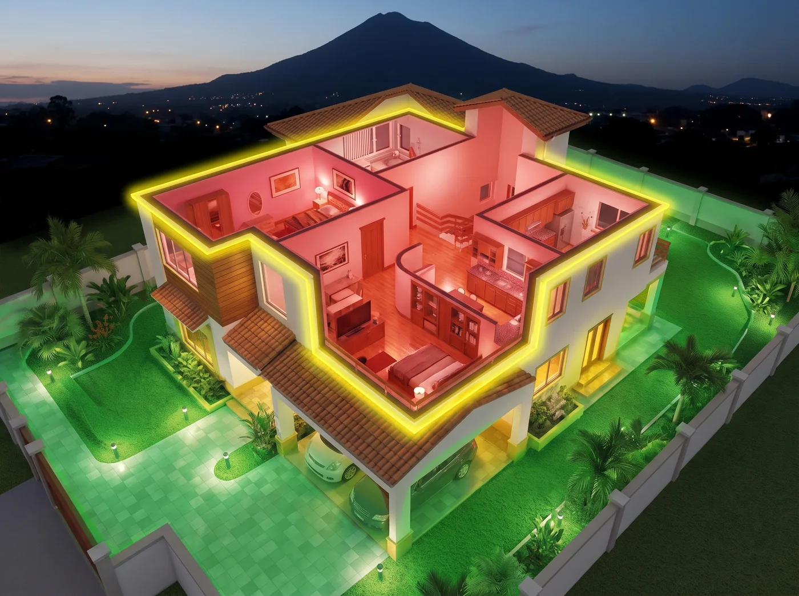
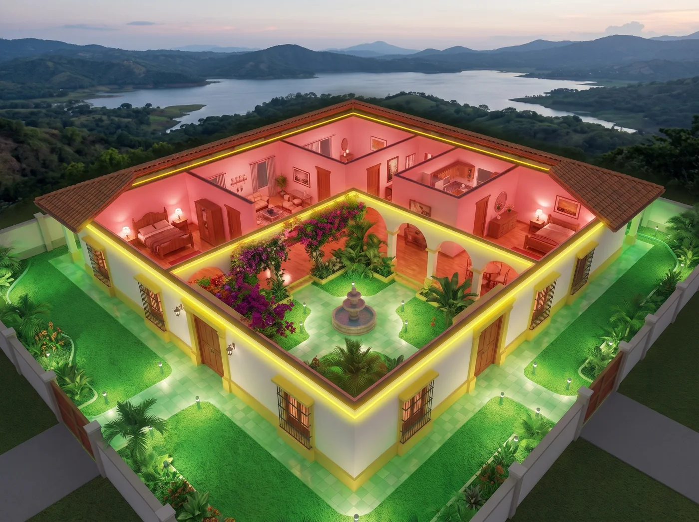
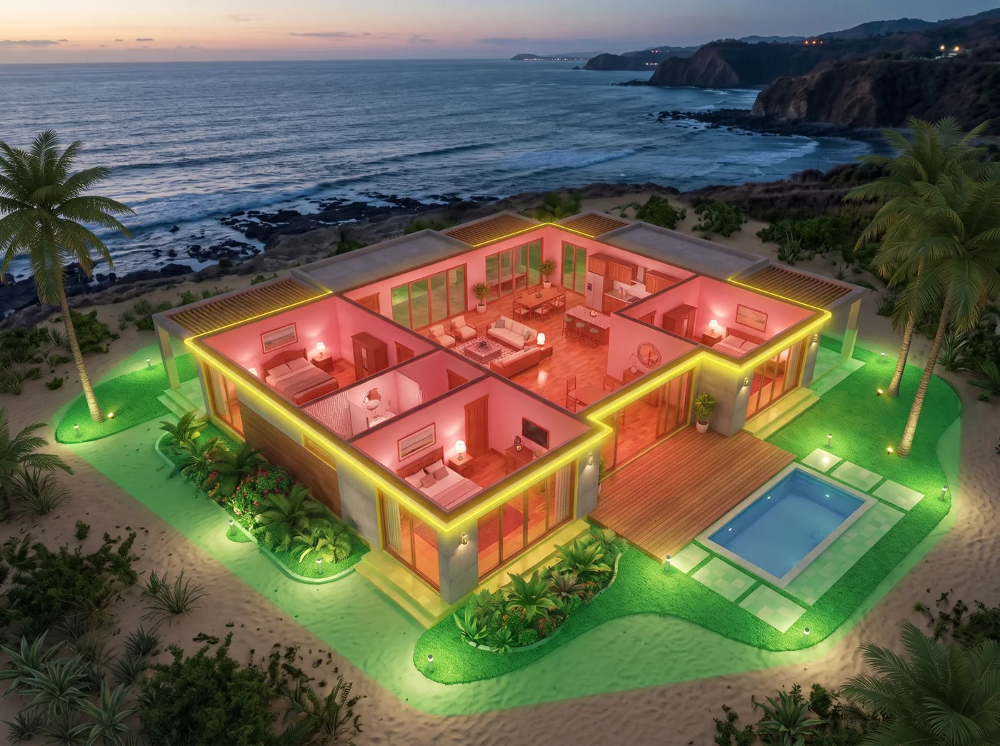
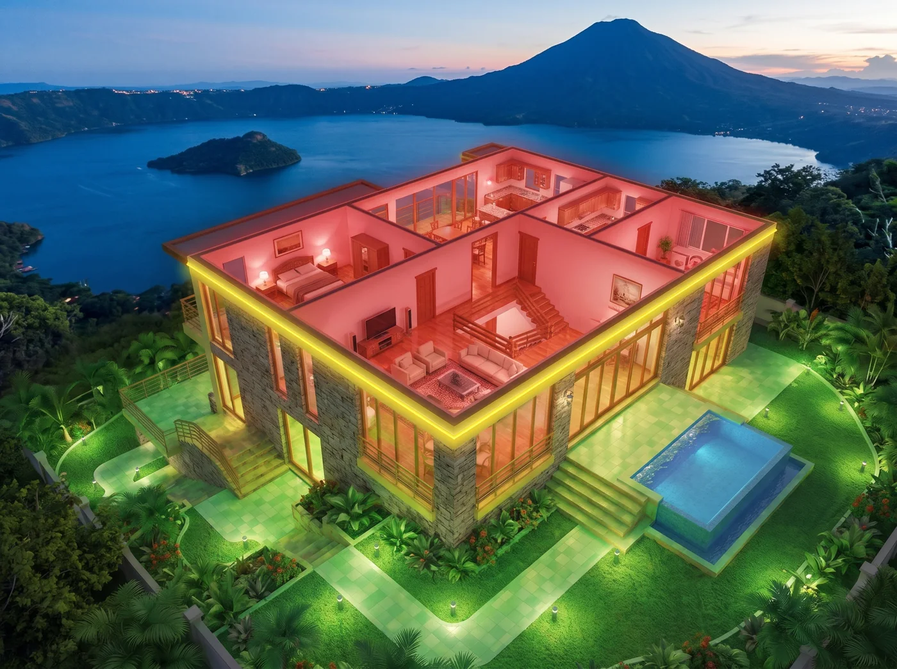
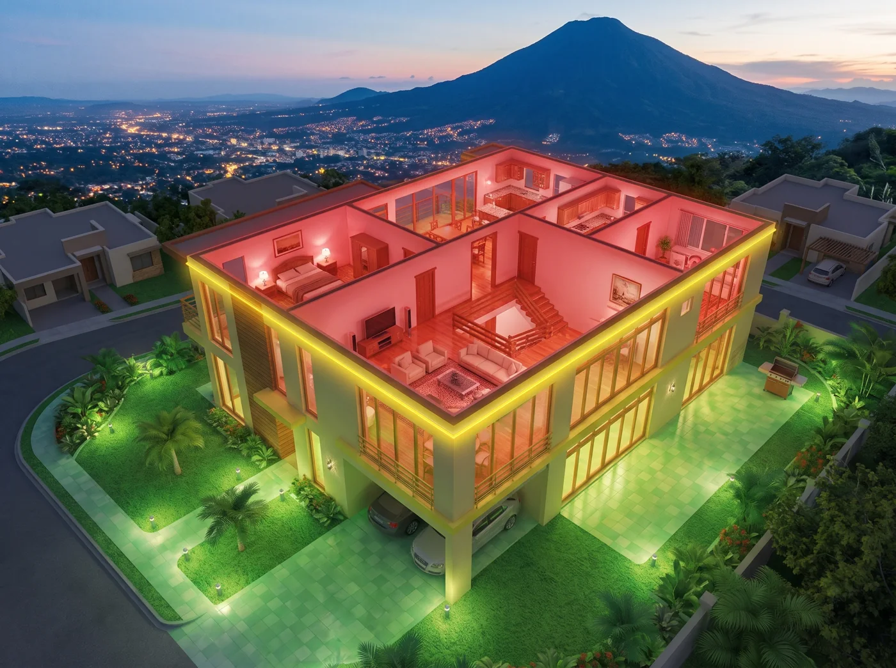
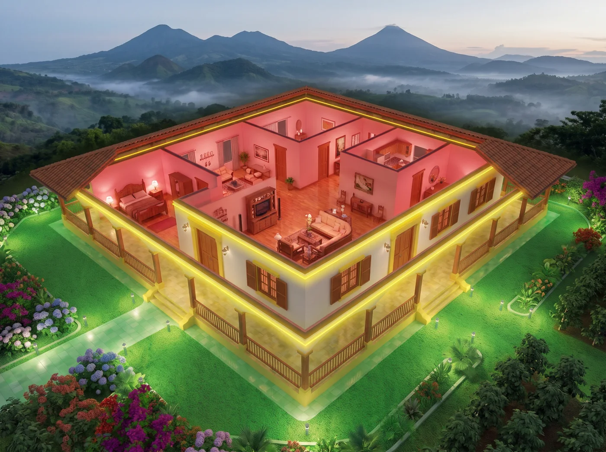
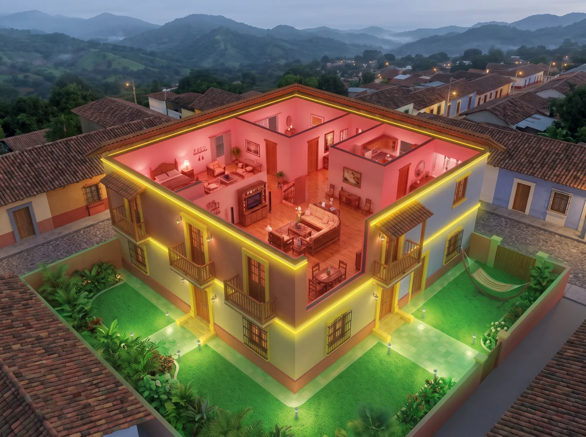
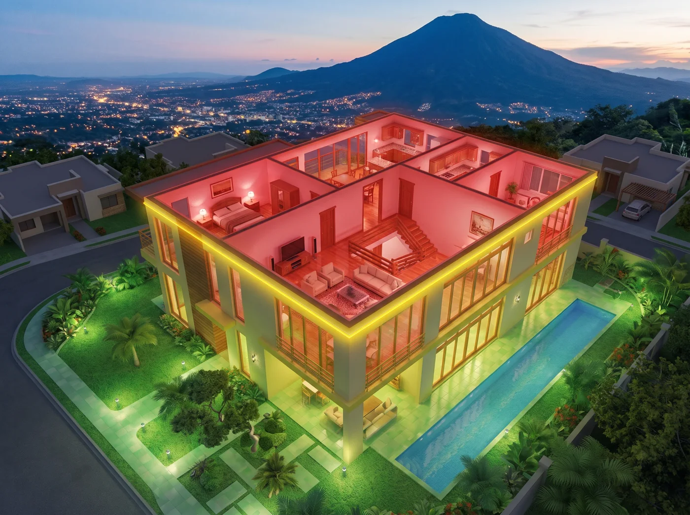
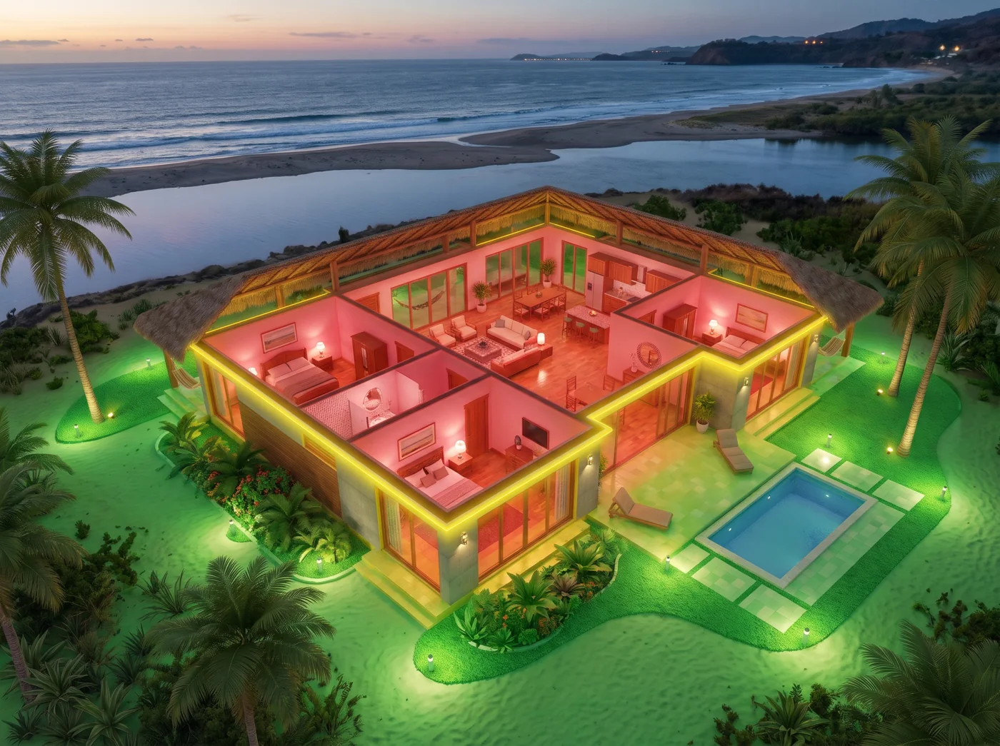
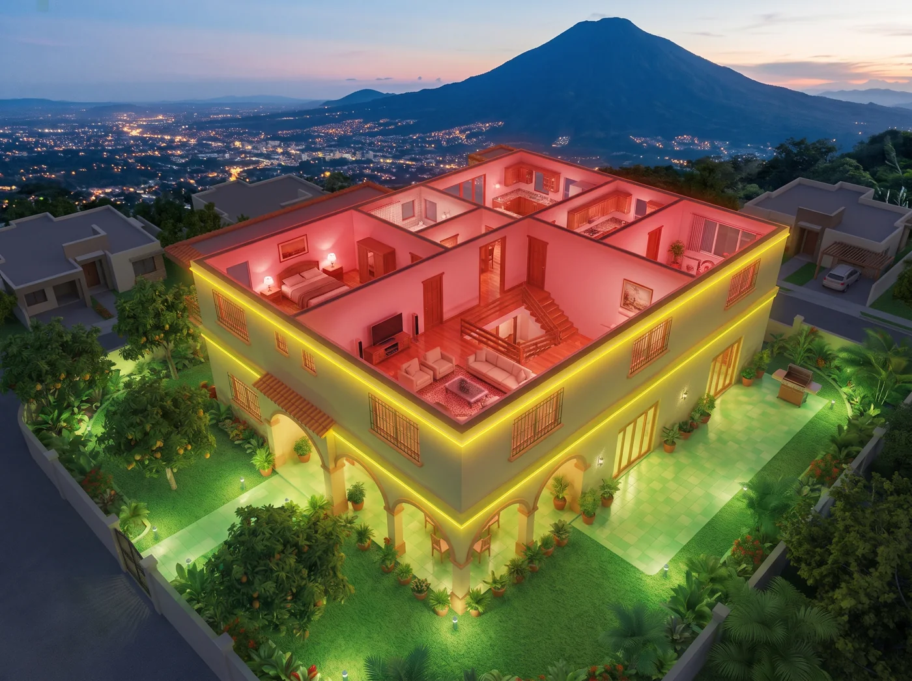

Para la sección «¿Dónde revisamos?» de la portada. Mismo estilo que la casa de globaltni.com: interior en rojo, perímetro en amarillo y jardín en verde, cada una con un paisaje de El Salvador. Diga qué número prefiere.

1Casa moderna en Santa TeclaDos plantas, estuco blanco y madera, cochera y jardín tropical. Al fondo, el volcán de San Salvador al atardecer.

2Casa colonial de SuchitotoUna planta, teja roja, patio interior con fuente y buganvilias. Al fondo, el lago Suchitlán.

3Casa de playa en La LibertadUna planta, terraza de madera, piscina y cocoteros. Al fondo, el Pacífico y los acantilados.

4Casa del lago de CoatepequeDos plantas de piedra y vidrio, piscina infinita y jardín en terrazas. Al fondo, el lago con su isla y el volcán de Santa Ana.

5Casa en residencial de Antiguo CuscatlánDos plantas, techo plano, cochera y jardín con palmeras. Al fondo, las luces de San Salvador y el volcán.

6Casa de finca de café en ApanecaUna planta con corredores, columnas de madera y teja, jardín de flores y cafetales. Al fondo, montañas y volcanes de la Ruta de las Flores.

7Casa de pueblo en AtacoDos plantas con balcones de madera y paredes de color, patio con hamaca. Al fondo, el pueblo de Concepción de Ataco y sus montañas.

8Casa minimalista en Santa ElenaVolúmenes blancos, grandes ventanales y piscina larga junto al jardín. Al fondo, el volcán de San Salvador y la ciudad.

9Casa de playa en Costa del SolUna planta con terrazas y hamacas, piscina y cocoteros. Al fondo, el estero, la playa y el Pacífico.

10Casa familiar en San MiguelDos plantas, corredor con arcos y árboles de mango en el jardín. Al fondo, el volcán Chaparrastique.